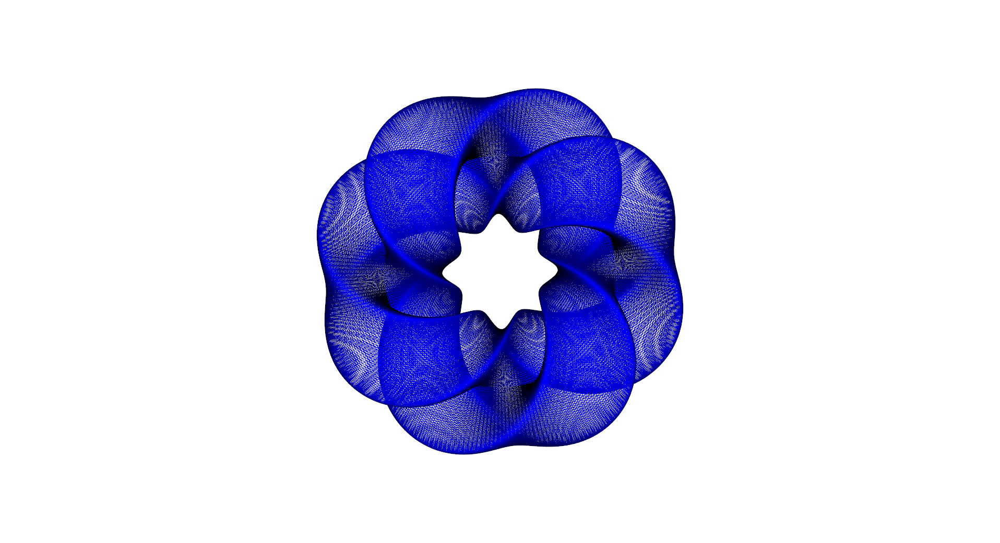

Sensitivity analysis of the heat equation on a Gray’s Klein bottle¶
Background¶
When working with computational models, it is often desirable to study the impact of input parameters on a particular model output (the objective value). The obvious approach to obtain this sensitivity information is to perturb each input variable independently and observe how the objective value changes. However, this approach quickly becomes infeasible if the number of input variables grows or if the model is computationally expensive.
One of the key advantages of the adjoint method is that the computational cost for obtaining sensitivities is nearly independent of the number of input variables. This allows us to compute sensitivities with respect to millions of input variables, or even with respect to entire input functions!
In the following example we consider a time-dependent model and apply dolfin-adjoint to determine the sensitivity of the final solution with respect to changes in its initial condition.
Problem definition¶
The partial differential equation for this example is the time-dependent heat-equation:
where \(\Omega\) is the spatial domain, \(T\) is the final time, \(u\) is the unkown temperature variation, \(\nu\) is the thermal diffusivity, and \(g\) is the initial temperature.
The objective value, the model output of interest, is the norm of the temperature variable at the final time:
The aim of this example is to compute the sensitivity of \(J\) with respect to the initial condition \(g\), that is:
Note that we did not specify any boundary conditions for the heat equation above. The reason is that for this example the domain \(\Omega\) is a closed manifold, that is a manifold without a boundary. More specifically the domain is a 2D manifold embedded in 3D, the Gray’s Klein bottle with parameters a = 2, n = 2 and m = 1. The meshed Klein bottle looks like this:
{kind=link}
Implementation¶
We start the implementation by importing the dolfin and
fenics_adjoint modules.
from __future__ import print_function
from fenics import *
from fenics_adjoint import *
# Next we load a triangulation of the Klein bottle as a mesh file.
mesh = Mesh()
infile = XDMFFile(mpi_comm_world(), 'klein.xdmf')
infile.read(mesh)
FEniCS natively supports solving partial differential equations on manifolds
[rognes2013], so nothing else needs to be done here. The code for
generating this mesh, can be found in examples/klein/make_mesh.py in the
dolfin-adjoint source tree.
Next we create the required functions to solve the heat equation. First we define a discrete function space based on a linear, continuous finite element. Then we create the solution, test and trial functions for the variational formulation. Finally, we define the initial temperature and the thermal diffusivity coefficient.
# Function space for the PDE solution
V = FunctionSpace(mesh, "CG", 1)
# Solution at the current time level
u = Function(V)
# Solution at the previous time level
u_old = Function(V)
# Test function
v = TestFunction(V)
# Initial condition
g = interpolate(Expression("sin(x[2])*cos(x[1])", degree=2), V)
# Thermal diffusivity
nu = 1.0
Now we discretise the problem in time and implement the variational formulation of the problem. By multiplying the heat equation with a testfunction \(v \in V\), integrating the Laplace term by parts, and applying a backward Euler time-discretisation, the discrete problem reads: Given \(u_{\textrm{old}} \in V\), find \(u \in V\) such that for all \(v \in V\):
or in code:
# Set the options for the time discretization
T = 1.
t = 0.0
step = 0.1
# Define the variational formulation of the problem
F = u*v*dx - u_old*v*dx + step*nu*inner(grad(v), grad(u))*dx
One remark before we continue with solving the forward problem. Generally, the adjoint equations depend on the solutions of the forward model. Therefore, dolfin-adjoint stores every forward solution in memory by default. While this approach is fast, it requires significant memory which can quickly become infeasible for large-scale, time-dependent applications. For such situations, an optimal checkpointing strategy based on the revolve library [4M-GW00] may be used, which trades off memory required for additional computational cost. The following code demonstrates how checkpointing would be activated:
#adj_checkpointing('multistage', steps=11, snaps_on_disk=1, snaps_in_ram=3, verbose=True)
We leave checkpointing deactivated for now, but will present runtime results with checkpointing at the end of this section. More information on checkpointing can found in the checkpointing section.
The next step is to solve the time-dependent forward problem.
fwd_timer = Timer("Forward run")
fwd_time = 0
u_pvd = File("output/u.pvd")
# Execute the time loop
u_old.assign(g, annotate=True)
while t <= T:
t += step
fwd_timer.start()
solve(F == 0, u)
u_old.assign(u)
fwd_time += fwd_timer.stop()
u_pvd << u
At the beginning of the time loop, the initial condition \(g\) is copied
into \(u_{\textrm{old}}\). Note the annotate=True argument, which tells
dolfin-adjoint that this assignment is part of the forward model computation.
Without it, the model output would have no dependency on the initial condition
\(g\) and the sensitivity would just be 0. Also note the
adj_inc_timestep call. This
function indicates the end of a time step and is only required with
checkpointing enabled.
At this point, we can compute the objective functional \(J\) and compute the sensitivity with respect to the initial condition \(g\):
J = assemble(inner(u, u)*dx)
m = Control(g)
adj_timer = Timer("Adjoint run")
dJdm = compute_gradient(J, m, project=True)
adj_time = adj_timer.stop()
Note the project=True flag for compute_gradient(). It indicates that
the gradient should not be returned as an operator, that is not in the dual
space \(V^*\), but instead its Riesz representation in the primal space
\(V\). This is necessary to plot the sensitivities without seeing mesh
dependent features.
Next we plot the computed sensitivity and print timing statistics comparing the runtime of the forward and adjoint solves.
plot(dJdm, title="Sensitivity of ||u(t=%f)||_L2 with respect to u(t=0)." % t)
interactive()
print("Forward time: ", fwd_time)
print("Adjoint time: ", adj_time)
print("Adjoint to forward runtime ratio: ", adj_time / fwd_time)
The example code can be found in examples/klein in the dolfin-adjoint
source tree, and executed as follows:
$ python klein.py
...
Forward time: 8.62722325325
Adjoint time: 7.75998806953
Adjoint to forward runtime ratio: 0.899476904879
Since the forward model is linear, the theoretical optimum of the adjoint and forward runtime ratio is 1. Indeed, the observed value achieves this performances, and even slightly outperforms it.
The following image on the left shows the initial temperature variation \(u(T=0)\) and the image on the right the final temperature variation \(u(T=1)\). The diffusion of the initial temperature variation over the time period is clearly visible.

The next image shows the computed sensitivity \(\textrm{d} (\|u(t=1)\|) / \textrm{d}(u(T=0))\):

Checkpointing timings¶
Checkpointing is crucial to limit the memory requirements when running large-scale models with many time steps.
In the following test, we investigate the additional computational cost when using checkpointing over the default store-all strategy in dolfin-adjoint. The following table compares the slow-down factor with 11 timesteps, no disk checkpoints, and with varying memory checkpoints:
| Number of memory checkpoints | 2 | 3 | 4 | 5 | 11 (no checkpointing) |
|---|---|---|---|---|---|
| Theoretical optimal adjoint to forward runtime ratio | 5.00 | 2.18 | 1.63 | 1.45 | 1.00 |
| Observed adjoint to forward runtime ratio | 5.07 | 2.26 | 1.73 | 1.53 | 0.90 |
These results indicate that the performance of dolfin-adjoint with checkpointing is close to the predicted optimal performance.
References